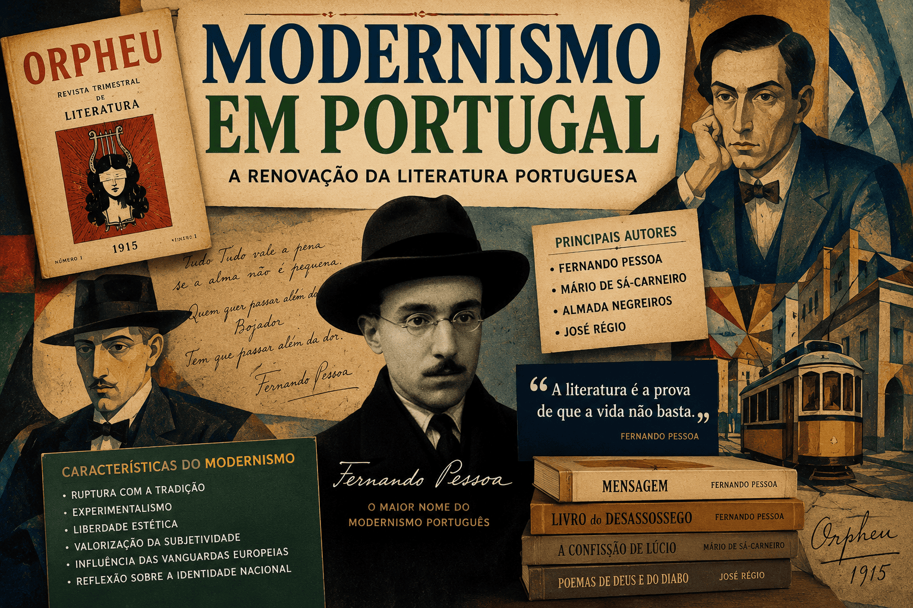

Modernismo em Portugal: origem, características, autores e principais obras
O Modernismo em Portugal foi um dos movimentos literários mais importantes da história da literatura portuguesa. Surgido no início do século XX, o movimento representou uma ruptura com as tradições estéticas do passado e buscou novas formas de expressão artística, acompanhando as transformações sociais, culturais e políticas da época.

Influenciado pelas vanguardas europeias, o Modernismo português revolucionou a poesia, a prosa e a reflexão sobre a identidade nacional. Seus autores propuseram uma literatura inovadora, marcada pela experimentação formal, pelo subjetivismo e pela valorização da liberdade criativa.
O que foi o Modernismo em Portugal?
O Modernismo em Portugal foi um movimento artístico e literário que surgiu oficialmente em 1915 com a publicação da revista Orpheu, considerada o marco inicial do modernismo português.
Os escritores modernistas procuravam romper com os modelos tradicionais do Realismo, Naturalismo e Simbolismo, defendendo uma arte mais livre, original e conectada às mudanças do mundo contemporâneo.
O movimento recebeu forte influência das vanguardas europeias, especialmente do Futurismo, Cubismo, Expressionismo e Surrealismo.
Contexto histórico do Modernismo português
O início do século XX foi um período de profundas mudanças em Portugal e na Europa.
Entre os acontecimentos que influenciaram os modernistas portugueses destacam-se:
- A crise da monarquia portuguesa;
- A implantação da República em 1910;
- O avanço da industrialização;
- O crescimento das grandes cidades;
- A Primeira Guerra Mundial (1914-1918);
- As transformações culturais e tecnológicas do período.
Diante desse cenário, muitos artistas sentiram a necessidade de criar uma literatura que refletisse as inquietações e os desafios da modernidade.
Principais características do Modernismo em Portugal
O Modernismo português apresentou diversas características inovadoras.
Ruptura com a tradição
Os modernistas rejeitavam os modelos literários considerados ultrapassados e buscavam novas formas de expressão.
Experimentalismo
Os autores exploravam novas estruturas poéticas, linguagem inovadora e diferentes perspectivas narrativas.
Liberdade estética
Não havia uma preocupação em seguir regras rígidas de composição ou estilos preestabelecidos.
Valorização da subjetividade
As obras frequentemente abordavam os conflitos internos, as emoções e as reflexões existenciais dos indivíduos.
Influência das vanguardas europeias
Movimentos como Futurismo, Cubismo e Surrealismo influenciaram diretamente a produção modernista portuguesa.
Reflexão sobre a identidade nacional
Muitos escritores procuraram compreender o papel de Portugal no mundo moderno e revisitar elementos da cultura portuguesa.
A revista Orpheu e o início do Modernismo
A publicação da revista Orpheu, em 1915, marcou oficialmente o surgimento do Modernismo em Portugal.
A revista teve apenas dois números publicados, mas seu impacto foi enorme. As propostas inovadoras dos autores causaram estranhamento e até escândalo entre os leitores mais conservadores.
Entre os principais colaboradores da revista estavam:
- Fernando Pessoa;
- Mário de Sá-Carneiro;
- Almada Negreiros;
- Luís de Montalvor.
Mesmo com sua curta duração, a revista tornou-se símbolo da renovação literária portuguesa.
As fases do Modernismo em Portugal
Primeira fase: Geração de Orpheu (1915)
Caracterizada pela ruptura radical com a tradição e pela influência das vanguardas europeias.
Principais autores:
- Fernando Pessoa;
- Mário de Sá-Carneiro;
- Almada Negreiros.
Segunda fase: Presencismo (1927-1940)
Teve como principal veículo a revista Presença, publicada em Coimbra.
Os autores dessa fase valorizavam:
- A análise psicológica;
- O individualismo;
- A introspecção;
- A liberdade artística.
Principais representantes:
- José Régio;
- João Gaspar Simões;
- Branquinho da Fonseca.
Terceira fase: Neorrealismo e tendências posteriores
A partir da década de 1940, muitos escritores passaram a enfatizar questões sociais, políticas e econômicas.
Nessa etapa destacam-se:
- Alves Redol;
- Fernando Namora;
- Soeiro Pereira Gomes.
Fernando Pessoa: o maior nome do Modernismo português
Sem dúvida, Fernando Pessoa é o principal representante do Modernismo em Portugal.
Sua obra revolucionou a literatura ao criar os famosos heterônimos, personagens literários com estilos, biografias e visões de mundo próprias.
Principais heterônimos de Fernando Pessoa
Alberto Caeiro
Representa a simplicidade, a observação direta da natureza e a valorização das sensações.
Ricardo Reis
Produz uma poesia clássica, racional e influenciada pelo estoicismo.
Álvaro de Campos
Expressa a modernidade, o dinamismo urbano e os conflitos existenciais.
Bernardo Soares
Autor do livro Livro do Desassossego, apresenta uma escrita introspectiva e filosófica.
Mário de Sá-Carneiro
Foi um dos fundadores da revista Orpheu e uma das figuras centrais do primeiro Modernismo português.
Sua obra caracteriza-se por:
- Forte subjetivismo;
- Crise de identidade;
- Linguagem inovadora;
- Temas ligados à angústia existencial.
Entre suas obras mais conhecidas estão:
- A Confissão de Lúcio;
- Dispersão;
- Céu em Fogo.
Almada Negreiros
Artista multifacetado, atuou como escritor, pintor, ilustrador e ensaísta.
Sua produção apresenta:
- Espírito provocador;
- Influência futurista;
- Crítica social;
- Defesa da modernidade.
Uma de suas obras mais famosas é o Manifesto Anti-Dantas.
Principais obras do Modernismo em Portugal
| Autor | Obra |
|---|---|
| Fernando Pessoa | Mensagem |
| Fernando Pessoa | Livro do Desassossego |
| Mário de Sá-Carneiro | A Confissão de Lúcio |
| Mário de Sá-Carneiro | Dispersão |
| Almada Negreiros | Manifesto Anti-Dantas |
| José Régio | Poemas de Deus e do Diabo |
Modernismo em Portugal e Modernismo no Brasil
Semelhanças
- Ruptura com os modelos tradicionais;
- Busca por inovação estética;
- Influência das vanguardas europeias;
- Valorização da liberdade criativa.
Diferenças
| Modernismo em Portugal | Modernismo no Brasil |
|---|---|
| Início em 1915 com a revista Orpheu | Início em 1922 com a Semana de Arte Moderna |
| Forte caráter filosófico e existencial | Ênfase na identidade nacional brasileira |
| Destaque para Fernando Pessoa | Destaque para Mário de Andrade e Oswald de Andrade |
| Influência intensa do simbolismo e das vanguardas | Valorização da linguagem coloquial e regional |
Importância do Modernismo português
O Modernismo em Portugal representou uma profunda renovação cultural. O movimento ampliou as possibilidades da criação literária e influenciou gerações posteriores de escritores.
Além disso, consolidou autores que hoje ocupam lugar de destaque na literatura mundial, especialmente Fernando Pessoa, cuja obra continua sendo estudada e admirada em diversos países.
Conclusão
O Modernismo em Portugal marcou uma transformação decisiva na literatura portuguesa. Iniciado com a revista Orpheu em 1915, o movimento rompeu com os padrões tradicionais e abriu espaço para novas formas de criação artística.
Autores como Fernando Pessoa, Mário de Sá-Carneiro e Almada Negreiros tornaram-se símbolos dessa renovação cultural, produzindo obras que permanecem relevantes até os dias atuais. Estudar o Modernismo português é compreender um dos momentos mais criativos e inovadores da literatura em língua portuguesa.
Quiz — Modernismo em Portugal
Questão 1 — Qual publicação é considerada o marco inicial do Modernismo em Portugal?
Questão 2 — Quem é considerado o principal autor do Modernismo português?
Questão 3 — Qual característica NÃO pertence ao Modernismo português?
Questão 4 — O heterônimo Álvaro de Campos é conhecido por:
Questão 5 — A revista Presença está associada a qual fase do Modernismo português?
Referências
- PESSOA, Fernando. Mensagem. Lisboa: Ática, diversas edições.
- PESSOA, Fernando. Livro do Desassossego. Organização de Richard Zenith. São Paulo: Companhia das Letras, diversas edições.
- MOISÉS, Massaud. A Literatura Portuguesa. São Paulo: Cultrix, 2013.
- SARAIVA, António José; LOPES, Óscar. História da Literatura Portuguesa. Porto: Porto Editora, 2017.
- ABDALA JÚNIOR, Benjamin; PASCHOALIN, Maria Aparecida. História Social da Literatura Portuguesa. São Paulo: Ática, 2004.
Explore Outros Conteúdos
Continue seus estudos acessando outras seções do site Mestre Kira: